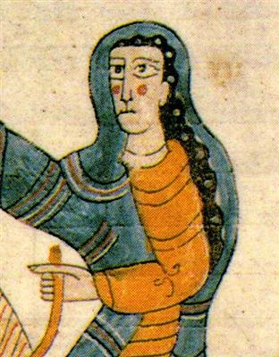
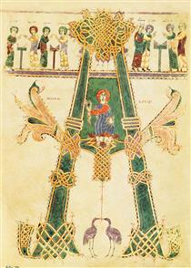
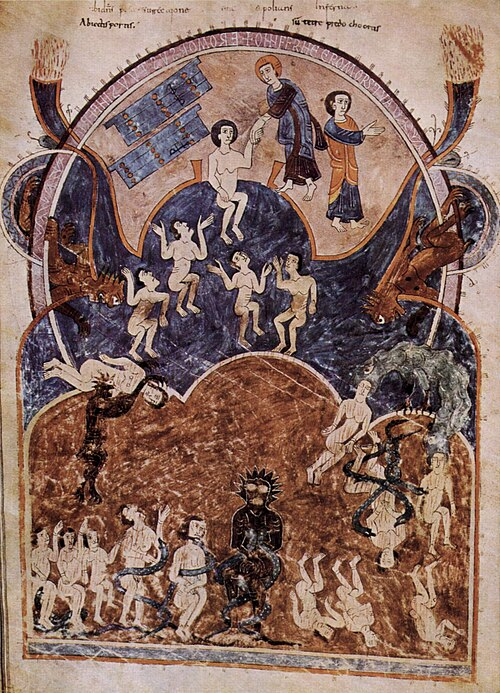
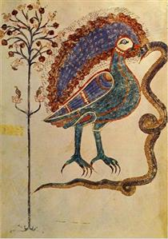

Ende
Os manuscritos foram produzidos em um mosteiro nas montanhas de Leão, no noroeste da Espanha. É possível distinguir a atuação de diferentes artistas neles. O pintor principal era, provavelmente, um sacerdote chamado Senior.

Biografia
? – 975
Ende (ou En) foi uma iluminadora de manuscritos que trabalhou em um conjunto de manuscritos do século X, dos quais se conhecem 24 exemplares ilustrados.
Esses manuscritos contêm o *Comentário sobre o Apocalipse*, compilado pelo monge espanhol Beato de Liébana em 786. Sua assinatura aparece no manuscrito de Beato atualmente guardado na Catedral de Girona — conhecido como *Beato de Girona* —, embora ela possa ter trabalhado também em outros códices.
Historiadores também atribuíram elementos dos manuscritos a Emetrius, cujo estilo pode ser identificado por meio da comparação com uma obra anterior assinada por ele. A terceira artista identificável é Ende. Ela assinou a obra como *DEPINTRIX* (pintora) e *DIE AIUTRIX* (ajudante de Deus). Provavelmente, ela era uma freira.
As iluminuras retratam a Visão Apocalíptica de São João Evangelista, descrita no Livro do Apocalipse, seguindo o estilo moçárabe. Esse estilo desenvolveu-se na Espanha após as invasões muçulmanas, combinando elementos da arte islâmica e de tradições decorativas — destacando-se a ênfase na geometria, nas cores vivas, nos fundos ornamentados e nas figuras estilizadas.
Suas obras



Referência bibliográfica:
ENDE. Ende,[s. d.]. Disponível em: https://www.wikiart.org/en/ende.